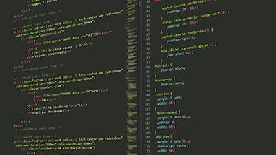

<!DOCTYPE html>
<html>

<head>
    <meta charset="utf-8" />
    <meta name="viewport" content="width=device-width, initial-scale=1" />
    <meta name="robots" content="noindex, nofollow" />

    <title>Senior Webmaster & Webmarketer - Alexandre Pulby</title>
    <link rel="stylesheet" href="https://cdn.jsdelivr.net/npm/bulma@0.9.4/css/bulma.min.css" />
    <link rel="shortcut icon" href="/img/favicon.svg" type="image/x-icon" />
    <link rel="stylesheet" href="style.css" />
    <link href="https://unpkg.com/aos@2.3.1/dist/aos.css" rel="stylesheet" />
</head>

<body></body>

</html>

<section class="hero late-gray-bg is-fullheight custom-font">
    <div class="hero-head">
        <nav class="navbar is-primary is-fixed-top">
            <div class="
                is-flex is-justify-content-space-between
                w-full
                px-1
                py-3
                late-gray-bg
              ">
                <!-- Start Branding Div -->
                <div class="navbar-brand">
                    <a class="navbar-item" href="#">
                        <p class="title has-text-primary">Alexandre Pulby</p>
                    </a>
                </div>
                <!-- End Branding Div -->
                <!-- Start Desktop Menu Div -->
                <div class="navbar-menu">
                    <div class="navbar-end">
                        <a class="navbar-item" href="#about">A propos</a>
                        <a class="navbar-item" href="#achievement">Chiffres clés</a>
                        <a class="navbar-item" href="#skills">Compétences</a>
                        <a class="navbar-item" href="#portfolio">Références</a>
                        <span class="navbar-item">
                            <a class="button is-primary" href="#contact">
                                <span class="iconify" data-icon="icomoon-free:envelop"></span>
                                <span>&nbsp;Contact</span>
                            </a>
                        </span>
                    </div>
                </div>
                <!-- End Desktop Menu Div -->

                <!-- Start Mobile Burger -->
                <span class="navbar-burger" data-target="navbarMenuHeroB">
                    <span></span>
                    <span></span>
                    <span></span>
                </span>
                <!-- End Mobile Burger -->
            </div>
            <!-- Start Mobile Menu Div -->
            <div id="navbarMenuHeroB" class="navbar-menu">
                <div class="navbar-end">
                    <a class="navbar-item mobile-menu" href="#about">A propos</a>
                    <a class="navbar-item mobile-menu" href="#achievement">
                        Chiffres clés
                    </a>
                    <a class="navbar-item mobile-menu" href="#skills">Compétences</a>
                    <a class="navbar-item mobile-menu" href="#portfolio">Références</a>
                    <a class="navbar-item mobile-menu" href="#contact">Contact</a>
                    <span class="navbar-item is-flex is-justify-content-center">
                        <a class="button is-primary" href="#contact">
                            <span class="iconify" data-icon="icomoon-free:envelop"></span>
                            <span>&nbsp; Contact</span>
                        </a>
                    </span>
                </div>
            </div>
            <!-- End Mobile Menu Div -->
        </nav>
    </div>
    <!-- Start Hero Section -->
    <div class="hero-body p-0 custom-font">
        <div class="main-hero"></div>
        <div class="container has-text-centered">
            <p data-aos="zoom-out-down" class="subtitle font-light">Salut, moi c'est</p>
            <h1 data-aos="zoom-out" class="title font-light is-1">
                <em>Alex</em>
            </h1>
            <p data-aos="zoom-out-up" class="subtitle font-light">Webmaster / Webmarketer senior <br> Administrateur
                système junior<br> Crypto & Cybersécurité <br> Formateur en communication digitale <br>
                <i>Multipotentiel | esprit de synthèse | curieux et addict au savoir</i></p>
        </div>
    </div>
    <!-- End Hero Section -->
</section>

<!-- #about is called to view when it is clicked at the navigation  -->
<div id="about" class="pt-6"></div>
<section class="block py-6 custom-font">
    <div class="column is-4 mx-auto">
        <h2 data-aos="fade-out" class="title has-text-centered is-uppercase">
            A propos.
        </h2>
        <div class="title-underline"></div>
    </div>
    <div class="columns mx-0">
        <div class="column is-6 m-auto p-6">
            <div class="content is-normal">
                <h3 class="subtitle is-3">Mes motivations : </h3>
                <p data-aos="fade-up" class="content is-normal">
                    Entrepreneur indépendant depuis toujours, j’ai envie de rejoindre une équipe et de participer à un
                    projet dans l’une de mes 2 thématiques phares que sont les fintechs et/ou la cybersécurité.
                </p>
            </div>
            <div class="content is-normal">
                <h3 class="subtitle is-3">Mes atouts :</h3>
                <p data-aos="fade-up">
                <ul>
                    <li>Je suis polyvalent, autonome et capable de m’adapter rapidement à n’importe quel environnement
                        technique.</li>
                    <li>Je suis la pierre angulaire de projets qui sont passés de 0 à 1.000.000 d’€ en quelques années
                        seulement.
                    </li>
                    <li>J’aimerais avoir l’opportunité de déployer tout mon potentiel sur un projet unique, au sein d'une équipe.</li>
                </ul>
                </p>
            </div>
        </div>
        <figure data-aos="fade-down" class="image p-6 m-auto column is-5">
            
            <!-- Words that appear when mouse is hovered on the picture (clicked on mobile) -->
            <span class="title font-light"></span>
        </figure>
    </div>
</section>


<!-- #achievement is called to view when it is clicked at the navigation  -->
<div id="achievement" class="py-6"></div>
<section class="hero is-light py-6 custom-font">
    <div class="column my-3 is-4 mx-auto">
        <h2 data-aos="fade-down" class="title has-text-centered is-uppercase">
            Chiffres clés
        </h2>
        <div class="title-underline"></div>
    </div>
    <div class="level">
        <div class="level-item has-text-centered">
            <div data-aos="fade-up" data-aos-delay="100">
                <p class="heading">Environ</p>
                <p class="title">15 ans</p>
                <p class="heading">d'expérience</p>
            </div>
        </div>
        <div class="level-item has-text-centered">
            <div data-aos="fade-down" data-aos-delay="200">
                <p class="heading">Plus de</p>
                <p class="title">70</p>
                <p class="heading">Projets clients accompagnés</p>
            </div>
        </div>
        <div class="level-item has-text-centered">
            <div data-aos="fade-up" data-aos-delay="300">
                <p class="heading">Plus de</p>
                <p class="title">500</p>
                <p class="heading">Elèves formés aux métiers du digital</p>
            </div>
        </div>
        <div class="level-item has-text-centered">
            <div data-aos="fade-down" data-aos-delay="400">
                <p class="heading">Plus de</p>
                <p class="title">5.000.000€</p>
                <p class="heading">de CA encaissé par mes clients grâce à mon travail</p>
            </div>
        </div>
    </div>
</section>


<!-- #skills is called to view when it is clicked at the navigation  -->
<div id="skills" class="pt-6 hero is-light"></div>
<div class="column my-3 is-4 mx-auto">
    <h2 data-aos="fade-down" class="title has-text-centered is-uppercase">
        Mes compétences
    </h2>
    <div class="title-underline"></div>
    <div class="block">
        <div class="container font-dark is-5">
            Comme vous pourrez le constater, j'ai eu l'opportunité de travailler sous plusieurs casquettes et suis capable de m'adapter très rapidement à n'importe quel environnement. <br> Mon carburant ? la soif de connaissances qui m'anime me permet de comprendre rapidement les domaines qui m'intéressent. Je m'épanouis dans la diversité des tâches qu'on me confie.
        </div>
    </div>
</div>


<section class="hero late-gray-bg custom-font">
    <div class="column is-4 mx-auto pt-6">
        <h3 class="title has-text-centered is-uppercase font-light" data-aos="fade-down">
            Administration système <br>
            (Depuis 2019)
        </h3>
    </div>
    <div class="block">
        <div class="container font-light is-5">
            Titulaire d'un graduate (bac+2) Technicien Système et Réseaux et d'un Bachelor (bac+3) Administrateur d'Infrastructures Sécurisées, je suis capable de mettre en place et de superviser un réseau d'entreprise, mais également d'installer des infrastructures web sécurisées.
        </div>
    </div>
    <div class="columns m-6 is-multiline">
        <div class="column is-4 my-6 px-2" data-aos="fade-down">
            <h3 class="title is-3 font-light">Systèmes & réseaux</h3>
            <p class="subtitle is-5 font-light">
                - Administration & gestion de réseau d'entreprise (matériel CISCO essentiellement)<br>
                - Définition des besoins <br>
                - Déploiement de postes avec FOG<br>
                - Rédaction de documentation & assistance utilisateur<br>
            </p>
        </div>
        <div class="column is-4 my-6 px-2" data-aos="fade-down">
            <h3 class="title is-3 font-light">Administration d'infrastructure</h3>
            <p class="subtitle is-5 font-light">
                - Création de scripts d'automatisation sous Powershell / DOS shell / Bash<br>
                - Utilisation régulière des principaux environnements systèmes<br>
                - Mise en place de serveur web sécurisé (sous Proxmox essentiellement)<br>
            </p>
        </div>
        <div class="column is-4 my-6 px-2" data-aos="fade-up">
            <h3 class="title is-3 font-light">Sécurité</h3>
            <p class="subtitle is-5 font-light">
                - Installation & utilisation de plusieurs outils d'analyse & de mesure (Syslog / Centreon...)<br>
                - Tests de pénétration système (basique pour le moment mais grosse appétence pour ce domaine)<br>
                - Intérêt pour l'OSINT et l'ingénieurie sociale<br>
                - Rédaction de documents de sensibilisation à la sécurité pour les utilisateurs
            </p>
        </div>
        <div class="column is-4 my-6 px-2" data-aos="fade-up">
            <h3 class="title is-3 font-light">Divers</h3>
            <p class="subtitle is-5 font-light">
                - Ai monté plusieurs infrastructures de minage de cryptomonnaies<br>
                - Certifié "CBP - Certified Bitcoin Professional" en 2020<br>
                - Suivi de cours & lectures régulières sur le protocole Bitcoin<br>
            </p>
        </div>
    </div>
</section>

<section class="hero late-gray-bg custom-font">
    <div class="column is-4 mx-auto pt-6">
        <h3 class="title has-text-centered is-uppercase font-light" data-aos="fade-down">
            Front-end & Marketing <br> (depuis 2010)
        </h3>
    </div>
    <div class="block">
        <div class="container font-light is-5">
            Titulaire d'un bac +2 "Services et réseaux de communication" et d'une licence "E-commerce & E-marketing", j'ai une solide expérience en matière de création et gestion de site internet.
    </div>
    <div class="columns m-6 is-multiline">
        <div class="column is-4 my-6 px-2" data-aos="fade-down">
            <h3 class="title is-3 font-light">HTML/CSS</h3>
            <p class="subtitle is-5 font-light">
                - Création et intégration de site web statiques et dynamique<br>
                - Connaissances avancées CSS / SASS<br>
                - Bonnes connaissances de l'environnement JAMStack<br>
            </p>
        </div>
        <div class="column is-4 my-6 px-2" data-aos="fade-down">
            <h3 class="title is-3 font-light">SEO</h3>
            <p class="subtitle is-5 font-light">
                - Pilotage d'une stratégie SEO de A à Z<br>
                - Connaissance avancée des principaux outils<br>
                - Formation Cocon Sémantique suivi avec L. Bourelly<br>
            </p>
        </div>
        <div class="column is-4 my-6 px-2" data-aos="fade-down">
            <h3 class="title is-3 font-light">SEA</h3>
            <p class="subtitle is-5 font-light">
                - Réflexion stratégique, préparation d'un budget<br>
                - Déploiement de campagne Google Ads<br>
                - Gestion quotidienne - spécialisé dans le search 
            </p>
        </div>
        <div class="column is-4 my-6 px-2" data-aos="fade-up">
            <h3 class="title is-3 font-light">Développement</h3>
            <p class="subtitle is-5 font-light">
                - Développement de sites WordPress (thèmes & plugins)<br>
                - Bonne connaissance du framework Hugo<br>
                - Connaissances élémentaires des langages Javascript, Go, Python (utilisés à des fins personnelles -
                scraping, outils marketing personnels, etc.)
            </p>
        </div>
        <div class="column is-4 my-6 px-2" data-aos="fade-up">
            <h3 class="title is-3 font-light">Data Analytics</h3>
            <p class="subtitle is-5 font-light">
                - Certification Google Analytics avancé & Google Tag Manager <br>
                - Installation et paramétrage de balises de suivi marketing <br>
                - Définition des KPI's, reporting et mise en place d'actions correctives sur site.
            </p>
        </div>
        <div class="column is-4 my-6 px-2" data-aos="fade-up">
            <h3 class="title is-3 font-light">Divers</h3>
            <p class="subtitle is-5 font-light">
                - Belle expérience en projets e-commerce (e-commerçant pendant 5 ans) <br>
                - Utilisation régulière d'outils & plateformes d'acquisition de trafic (affiliation / marketplaces,
                etc.)<br>
            </p>
        </div>
    </div>
</section>

<section class="hero late-gray-bg custom-font">
    <div class="column is-3 mx-auto pt-6">
        <h2 class="title has-text-centered is-uppercase font-light" data-aos="fade-down">
            Soft Skills
        </h2>

    </div>
    <div class="columns m-6 ">
        <div class="column my-6  px-2" data-aos="fade-down">
            <h3 class="title is-3 font-light">Compétences humaines</h3>
            <p class="subtitle is-5 font-light">
                - Toujours à l'écoute des autres<br>
                - Aide sans attendre de retour<br>
                - Ne compte pas ses heures<br>
                - Très patient / ne s'emporte jamais
            </p>
        </div>
        <div class="column my-6  px-2" data-aos="fade-down">
            <h3 class="title is-3 font-light">Compétences managériales</h3>
            <p class="subtitle is-5 font-light">
                - Pilotage d'équipe pluricompétence (développeur / graphiste / secrétaire / logistique)<br>
                - Coach d'entrepreneurs (stratégie marketing & commerciale)<br>
                - Gestion et suivi de groupes d'élèves<br>
                - Souvent consulté par d'anciens élèves pour leurs apporter des conseils 
            </p>
        </div>
        <div class="column my-6  px-2" data-aos="fade-down">
            <h3 class="title is-3 font-light">Divers</h3>
            <p class="subtitle is-5 font-light">
                - Ceinture noire de Karaté et d'Aikibudo<br>
                - Ai appris quelques notions basiques de trading pour m'amuser avec des cryptomonnaies<br>
                - Pianiste et guitariste a ses heures perdues (ancien saxophoniste)<br>

            </p>
        </div>
    </div>
</section>


<div id="portfolio" class="py-6"></div>
<section class="block py-6 custom-font">
    <div class="column is-4 mx-auto">
        <h2 class="title has-text-centered is-uppercase" data-aos="fade-down">
            Mes sites & références
        </h2>
        <div class="title-underline"></div>
    </div>
    <div class="columns mx-0 is-multiline">
        <div class="column is-10 columns mx-auto mt-6">
            <figure class="image column is-4 mx-auto" data-aos="fade-up">
                <a href="https://bout2code.fr"></a>
                <!-- Words that appear when mouse is hovered on the picture (clicked on mobile) -->
                <a href="https://bout2code.fr"><span class="title font-light">Bout2code</span></a>
            </figure>
            <figure class="image column is-4 mx-auto" data-aos="fade-down" data-aos-delay="100">
                <a href="https://www.webmark-up.com/"></a>
                <!-- Words that appear when mouse is hovered on the picture (clicked on mobile) -->
                <a href="https://www.webmark-up.com/"><span class="title font-light">Webmark'up</span></a>
            </figure>
            <figure class="figure image column is-4 mx-auto" data-aos="fade-up" data-aos-delay="200">
                
                <!-- Words that appear when mouse is hovered on the picture (clicked on mobile) -->
                <a href="https://doknet.fr"></a><span class="title font-light">Blog admin système</span></a>
            </figure>
        </div>

    </div>
</section>


<!-- #contact is called to view when it is clicked at the navigation  -->
<div id="contact" class="py-6"></div>
<section class="hero is-light py-6 custom-font">
    <div class="column my-3 is-4 mx-auto">
        <h2 class="title has-text-centered is-uppercase" data-aos="fade-down">
            Me contacter
        </h2>
        <div class="title-underline"></div>
    </div>
    <!-- To receive submissions, you can use third party services like
  - https://formsubmit.io/ or 
  - https://formspree.io/ 
  and add it into the action here -->
    <form class="form" action="https://formsubmit.co/0bce3e122c613f62d320b3c66b525370" method="POST">
        <div class="field">
            <label class="label">Nom</label>
            <p class="control has-icons-left">
                <input class="input is-primary" type="text" placeholder="Comment vous appelez-vous ?" />
                <span class="iconify icon is-small is-left p-1" data-icon="fe:user"></span>
            </p>
        </div>
        <div class="field">
            <label class="label">Email</label>
            <p class="control has-icons-left">
                <input class="input is-primary" type="email" placeholder="votre@email.com" />
                <span class="iconify icon is-small is-left p-1" data-icon="fe:mail"></span>
            </p>
        </div>
        <div class="field">
            <label class="label">Message</label>
            <p class="control has-icons-left">
                <textarea class="textarea input is-primary" placeholder="Ecrivez-moi ici" name="message"></textarea><span
                    class="iconify icon is-small is-left p-1" data-icon="fe:pencil"></span>
            </p>
        </div>
        <button type="submit" class="button is-primary is-outlined">Envoyer</button>
    </form>
</section>


<footer class="footer late-gray-bg custom-font">
    <div class="content has-text-centered">
        <a href="https://bulma.io/">
            
        </a>
    </div>
</footer>


<script>
    document.addEventListener('DOMContentLoaded', () => {
        // Get all "navbar-burger" elements
        const $navbarBurgers = Array.prototype.slice.call(
            document.querySelectorAll('.navbar-burger'),
            0,
        )

        // Check if there are any navbar burgers
        if ($navbarBurgers.length > 0) {
            // Add a click event on each of them
            $navbarBurgers.forEach((el) => {
                el.addEventListener('click', () => {
                    // Get the target from the "data-target" attribute
                    const target = el.dataset.target
                    const $target = document.getElementById(target)

                    // Toggle the "is-active" class on both the "navbar-burger" and the "navbar-menu"
                    el.classList.toggle('is-active')
                    $target.classList.toggle('is-active')
                })
            })
        }
    })

    // So that the year is always updated to the current year
    document.getElementById('year').innerHTML = new Date().getFullYear()
</script>

<!-- Load Animate on Scroll javascript library. -->
<script src="https://unpkg.com/aos@2.3.1/dist/aos.js"></script>

<!-- Initializing Animate on Scroll -->
<script>
    AOS.init()
</script>

<!-- Loading Iconify -->
<script src="https://code.iconify.design/2/2.1.0/iconify.min.js"></script>